실내건축기능사 (2015-07-19 기출문제)
1과목: 실내디자인
1. 다음 중 디자인에 있어 대중적이거나 저속하다는 의미를 나타내는 용어는?
- 키치(Kitsch)
- 퓨전(Fusion)
- 미니멀(Minimal)
- 데지그나레(Designare)
(정답률: 68%)

2. 촉각 또는 시각으로 지각할 수 있는 어떤 물체 표면상의 특징을 의미하는 것은?
- 색채
- 채도
- 질감
- 패턴
(정답률: 92%)
3. 마르셀 브로이어가 디자인한 작품으로 강철 파이프를 휘어 기본 골조를 만들고 가죽을 접합하여 좌판, 등받이, 팔걸이를 만든 의자는?
- 바실리 의자
- 파이미오 의자
- 바르셀로나 의자
- 힐 하우스 래더백 의자
(정답률: 74%)
4. 주택계획에 관한 설명으로 옳지 않은 것은?
- 침실의 위치는 소음원이 있는 쪽은 피하고, 정원 등의 공지에 면하도록 하는 것이 좋다.
- 부엌의 위치는 항상 쾌적하고, 일광에 의한 건조 소독을 할 수 있는 남쪽 또는 동쪽이 좋다.
- 리빙 다이닝 키친(LDK)은 대규모 주택에서 주로 채용되며 작업 동선이 길어지는 단점이 있다.
- 거실의 형태는 일반적으로 정사각형의 형태가 직사각형의 형태보다 가구의 배치나 실의 활용에 불리하다.
(정답률: 75%)
5. 실내 기본요소인 벽에 관한 설명으로 옳지 않은 것은?
- 공간과 공간을 구분한다.
- 공간의 형태와 크기를 결정한다.
- 실내 공간을 에워싸는 수평적 요소이다.
- 외부로부터의 방어와 프라이버시를 확보한다.
(정답률: 83%)
6. 거실의 가구 배치 방식 중 중앙의 테이블을 중심으로 좌석이 마주보도록 배치하는 방식은?
- 코너형
- 직선형
- 대면형
- 자유형
(정답률: 95%)
7. 시각적인 힘의 강약에 단계를 주어 디자인의 일부분에 초점이나 흥미를 부여하는 디자인 원리는?
- 통일
- 대칭
- 강조
- 조화
(정답률: 91%)
8. 개구부(창과 문)의 역할에 관한 설명으로 옳지 않은 것은?
- 창은 조망을 가능하게 한다.
- 창은 통풍과 채광을 가능하게 한다.
- 문은 공간과 다른 공간을 연결시킨다.
- 창은 가구, 조명 등 실내에 놓여지는 설치물에 대한 배경이 된다.
(정답률: 85%)
9. 다음 중 긴 축을 가지고 있으며 강한 방향성을 갖는 평면 형태는?
- 원형
- 정육각형
- 직사각형
- 정삼각형
(정답률: 78%)
10. 상점의 쇼윈도 평면 형식에 속하지 않는 것은?
- 홀형
- 만입형
- 다층형
- 돌출형
(정답률: 59%)
11. 상업 공간의 동선 계획으로 옳지 않은 것은?
- 종업원 동선은 동선 길이를 짧게 한다.
- 고객 동선은 행동의 흐름이 막힘이 없도록 한다.
- 종업원 동선은 고객 동선과 교차되지 않도록 한다.
- 고객 동선은 동선 길이를 될 수 있는 대로 짧게 한다.
(정답률: 82%)
12. 방풍 및 열손실을 최소로 줄여주는 반면 동선의 흐름을 원활히 해주는 출입문의 형태는?
- 접문
- 회전문
- 미닫이문
- 여닫이문
(정답률: 80%)
13. 다음 설명에 알맞은 건축화조명의 종류는?
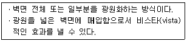
- 코브 조명
- 광창 조명
- 코퍼 조명
- 코니스 조명
(정답률: 83%)
14. 주거공간은 주 행동에 따라 개인, 사회, 가사노동공간 등으로 구분할 수 있다. 다음 중 사회공간에 속하지 않는 것은?
- 식당
- 거실
- 응접실
- 다용도실
(정답률: 78%)
15. 상점의 판매형식에 관한 설명으로 옳지 않은 것은?
- 대면판매는 종업원의 정위치를 정하기가 용이하다.
- 측면판매는 상품에 대한 설명이나 포장작업이 용이하다.
- 측면판매는 고객의 충동적 구매를 유도하는 경우가 많다.
- 대면판매를 하는 상품은 일반적으로 시계, 귀금속, 안경 등 소형 고가품이다.
(정답률: 65%)
16. 다음 설명에 알맞은 음과 관련된 현상은?
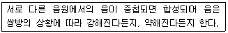
- 굴절
- 회절
- 간섭
- 흡음
(정답률: 67%)
17. 건축물의 에너지절약 설계기준에 따라 권장되는 외벽 부위의 단열 시공 방법은?
- 외단열
- 내단열
- 중단열
- 양측단열
(정답률: 72%)
18. 주관적 온열요소인 인체의 활동상태의 단위로 사용되는 것은?
- clo
- met
- m/s
- MRT
(정답률: 46%)
19. 간접 조명에 관한 설명으로 옳지 않은 것은?
- 조명 효율이 가장 좋다.
- 눈에 대한 피로가 적다.
- 균일한 조도를 얻을 수 있다.
- 실내 반사율의 영향을 받는다.
(정답률: 77%)
20. 실내공기오염을 나타내는 종합적 지표로서의 오염물질은?
- O2
- O3
- CO
- CO2
(정답률: 87%)
2과목: 실내환경
21. 목재의 재료적 특성으로 옳지 않은 것은?
- 열전도율과 열팽창률이 적다.
- 음의 흡수 및 차단성이 크다.
- 가연성이 크고 내구성이 부족하다.
- 풍화마밀에 잘 견디며 마모성이 작다.
(정답률: 60%)
22. 콘크리트용 혼화제 중 점성 등을 향상시켜 재료분리를 억제하기 위해 사용되는 것은?
- AE제
- 방청제
- 증점제
- 유동화제
(정답률: 36%)
23. 굳지않은 콘크리트의 성질을 표시하는 용어 중 굳지않은 콘크리트의 유동성 정도, 반죽질기를 나타내는 용어는?
- 컨시스턴시
- 워커빌리티
- 펌퍼빌리티
- 피니셔빌리티
(정답률: 50%)
24. 다음 중 물과 화학반응을 일으켜 경화하는 수경성 미장 재료는?
- 회반죽
- 회사벽
- 석고 플라스터
- 돌로마이트 플라스터
(정답률: 54%)
25. 콘크리트용 골재의 입도를 수치적으로나타내는 지표로 이용되는 것은?
- 분말도
- 조립률
- 팽창도
- 강열감량
(정답률: 37%)
26. 질이 단단하고 내구성 및 강도가 크고 외관이 수려하며, 정리의 거리가 비교적 커서 대재(大材)를 얻을 수 있으나, 함유광물의 열팽창계수가 다르므로 내화성이 약한 석재는?
- 부석
- 현무암
- 웅회암
- 화강암
(정답률: 76%)
27. 금속의 부식방지를 위한 관리 대책으로 옳지 않은 것은?
- 부분적으로 녹이 나면 즉시 제거한다.
- 큰 변형을 준 것은 담금질하여 사용한다.
- 가능한 이종 금속을 인접 또는 접촉시켜 사용하지 않는다.
- 표면을 평활하고 깨끗이 하며 가능한 건조 상태로 유지한다.
(정답률: 76%)
28. 다음 중 건축용 단열재에 속하지 않는 것은?
- 압변
- 유리 섬유
- 석고 플라스터
- 폴리 우레탄폼
(정답률: 38%)
29. 다음 중 구조재료에 요구되는 성능과 가장 거리가 먼 것은?
- 역학적 성능
- 물리적 성능
- 화학적 성능
- 감각적 성능
(정답률: 81%)
30. 다음 설명에 알맞은 유리의 종류는?
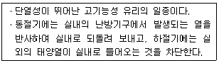
- 배강도 유리
- 스핀드럴 유리
- 스테인드글라스
- 저방사(Low-E) 유리
(정답률: 63%)
3과목: 실내건축재료
31. 폴리스티렌 수지의 일반적 용도로 알맞은 것은?
- 단열재
- 대용유리
- 섬유제품
- 방수시트
(정답률: 51%)
32. 한국산업표준(KS)에 따른 포틀랜드 시멘트의 종류에 속하지 않는 것은?
- AE 포틀랜드 시멘트
- 조강 포틀랜드 시멘트
- 보통 포틀랜드 시멘트
- 중용열 포틀랜드 시멘트
(정답률: 65%)
33. 다음의 설명에 알맞은 석재는?
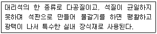
- 화강암
- 사문암
- 안산암
- 트래버틴
(정답률: 70%)
34. 다음 중 목(木)부에 사용이 가장 곤란한 도료는?
- 유성바니시
- 유성페인트
- 페놀수지 도료
- 멜라민수지 도료
(정답률: 42%)
35. 점토의 성질에 관한 설명으로 옳지 않은 것은?
- 주성분은 실리카와 알루미나이다.
- 인장강도는 압축강도의 약 5배이다.
- 비중은 일반적으로 2.5~2.6 정도이다.
- 양질의 점토는 습윤 상태에서 현저한 가소성을 나타낸다.
(정답률: 59%)
36. 합판에 관한 설명으로 옳지 않은 것은?
- 함수율 변화에 따른 팽창ㆍ수축의 방향성이 없다.
- 뒤틀림이나 변형이 적은 비교적 큰 면적의 평면 재료를 얻을 수 있다.
- 표면가공법으로 흡음효과를 낼 수 있으며 외장적 효과도 높일 수 있다.
- 목재를 얇은 판으로 만들어 이들을 섬유방향이 서로 직교되도록 짝수로 적충하여 집착시킨 판을 말한다.
(정답률: 61%)
37. 흡수율이 커서 외장이나 바닥 타일로는 사용하지 않으며, 실내 벽체에 사용하는 타일은?
- 도기질 타일
- 석기질 타일
- 자기질 타일
- 클링커 타일
(정답률: 41%)
38. 다음 중 열가소성 수지에 속하는 것은?
- 요소 수지
- 아크릴 수지
- 맬라민 수지
- 실리콘 수지
(정답률: 51%)
39. 엠브레인 방수에 속하지 않는 것은?
- 도막방수
- 아스팔트방수
- 시멘트모르타르방수
- 합성고분자시트방수
(정답률: 39%)
40. 강의 응력도-변형률 곡선에서 탄성한도 지점은?
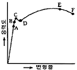
- B
- C
- D
- E
(정답률: 52%)
41. 주택의 평면도에 표시되어야 할 사항이 아닌 것은?
- 가구의 높이
- 기준선
- 벽, 기둥, 창호
- 실외 배치와 넓이
(정답률: 71%)
42. 삼각자 1조로 만들 수 없는 각도는?
- 15°
- 25°
- 1⑤°
- 150°
(정답률: 69%)
43. 목구조에서 가로재와 세로재가 직교하는 모서리 부분에 직각이 변하지 않도록 보강하는 철물은?
- 감잡이쇠
- ㄱ자쇠
- 띠쇠
- 안장쇠
(정답률: 73%)
44. 구조체 자체의 무게가 적어 넓은 공간의 지붕 등에 쓰이는 것으로, 상암 월드컵 경기장, 제주 월드컵 경기장에서 볼 수 있는 구조는?
- 절판구조
- 막구조
- 셀구조
- 현수구조
(정답률: 59%)
45. 실제 16m의 거리는 축척 1/200인 도면에서 얼마의 길이로 표현할 수 있는가?
- 80mm
- 60mm
- 40mm
- 20mm
(정답률: 78%)
46. 건축물의 밑바닥 전부를 일체화하여 두꺼운 기초판으로 구축한 기초의 명칭은?
- 온통기초
- 연속기초
- 복합기초
- 독립기초
(정답률: 71%)
47. 건축도면 작성 시 도면의 방향에 대해 옳게 설명한 것은?
- 평면도는 동측을 위로 하여 작도함을 원칙으로 한다.
- 배치도는 남측을 위로 하여 작도함을 원칙으로 한다.
- 입면도는 위, 아래 방향을 도면지의 위, 아래와 반대로 하는 것을 원칙으로 한다.
- 단면도는 위, 아래 방향을 도면지의 위, 아래와 일치시키는 것을 원칙으로 한다.
(정답률: 55%)
48. 단면용 재료 구조 표시 기호로 옳지 않은 것은?
- : 구조재(목재)
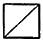
: 보조 구조재(목재)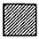
: 치장배(목재)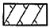
: 지반선
(정답률: 52%)
49. 건축구조의 분류 중 시공상에 의한 분류가 아닌 것은?
- 철근콘크리트구조
- 습식구조
- 조립구조
- 건식구조
(정답률: 61%)
50. 경량형강의 특성으로 옳지 않은 것은?
- 가공이 용이한 편이다.
- 볼트, 용접 등의 다양한 방법을 적용할 수 있다.
- 주요구조부는 대칭되게 조립해야 한다.
- 두께에 비해 단면치수가 작기 때문에 단면 2차 모멘트가 작다.
(정답률: 60%)
4과목: 건축일반
51. 건축제도 시 선긋기에 관한 설명 중 옳지 않은 것은?
- 수평선을 왼쪽에서 오른쪽으로 긋는다.
- 시작부터 끝까지 굵기가 일정하게 한다.
- 연필은 진행되는 방향으로 약간 기울여서 그린다.
- 삼각자의 왼쪽 옆면을 이용하여 수직선을 그을 때는 위쪽에서 아래 방향으로 긋는다.
(정답률: 70%)
52. 보를 없애고 바닥판을 두껍게 해서 보의 역할을 겸하도록 한 구조로, 기둥이 바닥 슬래브를 지지해 주상 복합이나 지하 주차장에 주로 사용되는 구조는?
- 플랫 슬래브 구조
- 절판 구조
- 벽식 구조
- 쉴 구조
(정답률: 65%)
53. 블록쌓기의 원칙으로 옳지 않은 것은?
- 블록은 상 두께가 두꺼운 쪽이 위로 향하게 한다.
- 인방보는 좌우 지지벽에 20cm 이상 몰리게 한다.
- 블록의 하루 쌓기의 높이는 1.2m ~ 1.5로 한다.
- 통줄눈을 원칙으로 한다.
(정답률: 48%)
54. 건축도면 제도 시 치수 기입법에 대한 설명 중 옳지 않은 것은?
- 전체 치수는 바깥쪽에, 부분 치수는 안쪽에 기입한다.
- 치수는 치수선의 중앙에 기입한다.
- 치수는 cm 단위를 원칙으로 한다.
- 치수는 특별이 명시하지 않는 한, 마무리 치수로 표시한다.
(정답률: 80%)
55. 철근과 콘크리트의 부착력에 대한 설명 중 옳지 않은 것은?
- 콘크리트의 부착력은 철근의 주장에 비례한다.
- 압축 강도가 큰 콘크리트일수록 부착력은 작아진다.
- 철근의 표면 상태와 단면 모양에 따라 부착력이 좌우된다.
- 이형철근이 원형철근보다 부착력이 크다.
(정답률: 58%)
56. 도면의 크기와 표제란에 관한 설명 중 옳지 않은 것은?
- 제도용지의 크기는 번호가 커짐에 따라 작아진다.
- A0의 넓이는 약 1m2이다.
- 큰 도면을 접을 때는 A4의 크기로 접는 것이 원칙이다.
- 표제란은 도면 왼쪽 위 모서리에 표시하는 것이 원칙이다.
(정답률: 56%)
57. 건축물 표현에 있어 사람을 함께 표현할 때 옳은 내용을 모두 고르면?
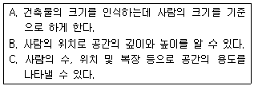
- A
- B, C
- A, C
- A, B, C
(정답률: 59%)
58. 제도 용지의 세로(단변)과 가로(장변)의 길이 비율은?
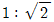
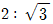
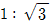
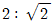
(정답률: 70%)
59. 아래 표시기호의 명칭은 무엇인가?
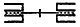
- 붙박이문
- 쌍미닫이문
- 쌍여닫이문
- 두짝 미거시문
(정답률: 53%)
60. 목재 접합에 사용되는 보강제 중 직사각형 단면에 길이가 짧은 나무토막을 사다리꼴로 납작하게 만든 것은?
- 쐐기
- 산지
- 축
- 이음
(정답률: 43%)